Spruiten Hoofdgewas
Ons specialisme. Lange oogstperiode, van herfst tot winter.
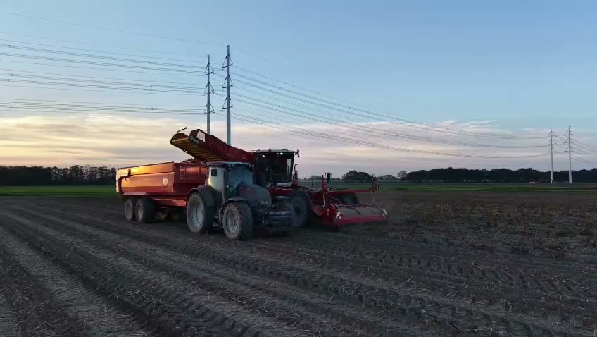
Huib en Chris Bos telen met vakmanschap en toewijding spruiten, aardappelen, uien en zomertarwe. Van het eerste plantje tot de laatste oogstdag.
Ontdek onze spruitenH&C Bos is het akkerbouwbedrijf van de broers Huib en Chris Bos. Vanuit Zevenhuizen, midden in de Zuidplaspolder, bewerken wij onze akkers met liefde voor het vak en respect voor de grond.
Wij geloven in korte lijnen, eerlijk werk en kwaliteit die je terugziet in elk product. Wat wij telen, telen we zelf: van grondbewerking en planten tot oogst en bewaring.
Neem contact op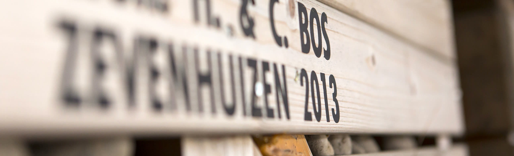
De spruit is het hart van ons bedrijf. Het is een teelt die geduld en precisie vraagt: in het voorjaar planten we de jonge plantjes uit, de hele zomer volgen we het gewas op de voet, en vanaf de herfst tot diep in de winter oogsten we.
Juist die lange oogstperiode maakt spruiten bijzonder. Een vleugje vorst maakt ze zelfs zoeter. Zo leveren wij maandenlang verse, stevige spruiten van constante kwaliteit.
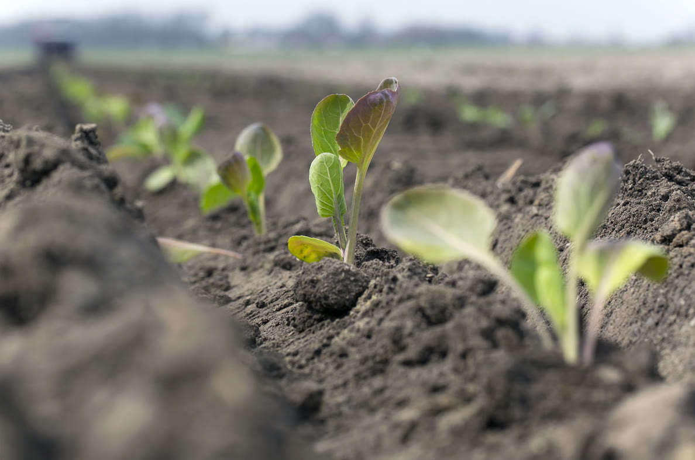
In het voorjaar gaan de jonge spruitplanten de grond in. Een goed geplant gewas is de basis voor een sterke oogst.
Gedurende de zomer groeit de plant uit tot een stevige stengel vol knopjes. Wij sturen bij waar nodig, met oog voor bodem en omgeving.
Van de herfst tot in de winter oogsten we de spruiten op het juiste moment, zodat ze vers en vol van smaak bij de afnemer komen.
Naast spruiten telen wij aardappelen, uien en zomertarwe. Een gezonde vruchtwisseling houdt de bodem vruchtbaar en onze gewassen sterk.
Ons specialisme. Lange oogstperiode, van herfst tot winter.
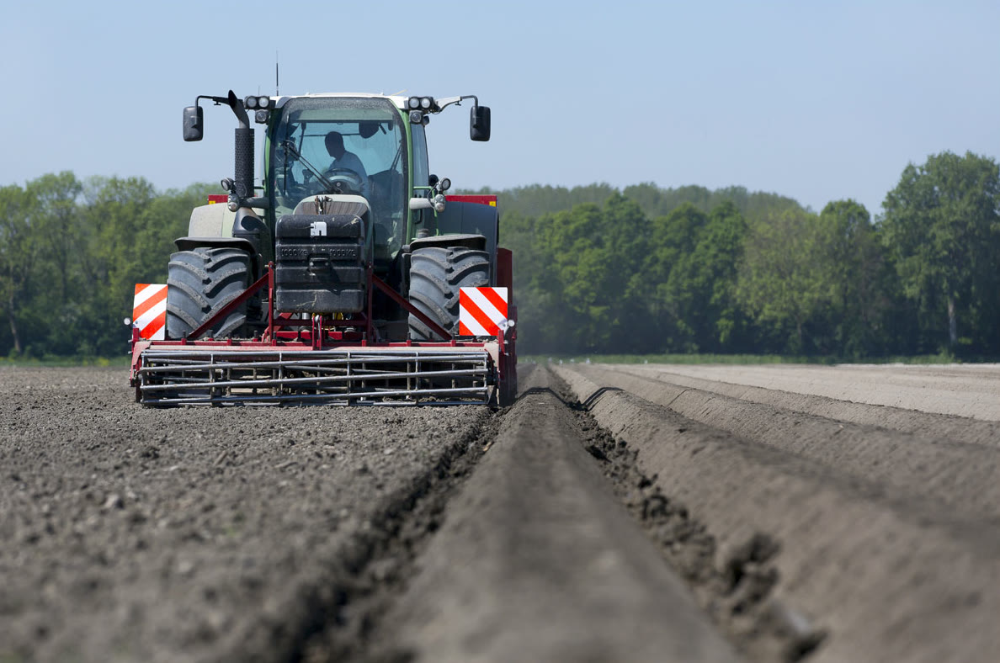
Gepoot in het voorjaar, gerooid in de nazomer en zorgvuldig bewaard in onze eigen bewaarplaats.
Gezaaid in het vroege voorjaar, geoogst en gedroogd voor een lange houdbaarheid.
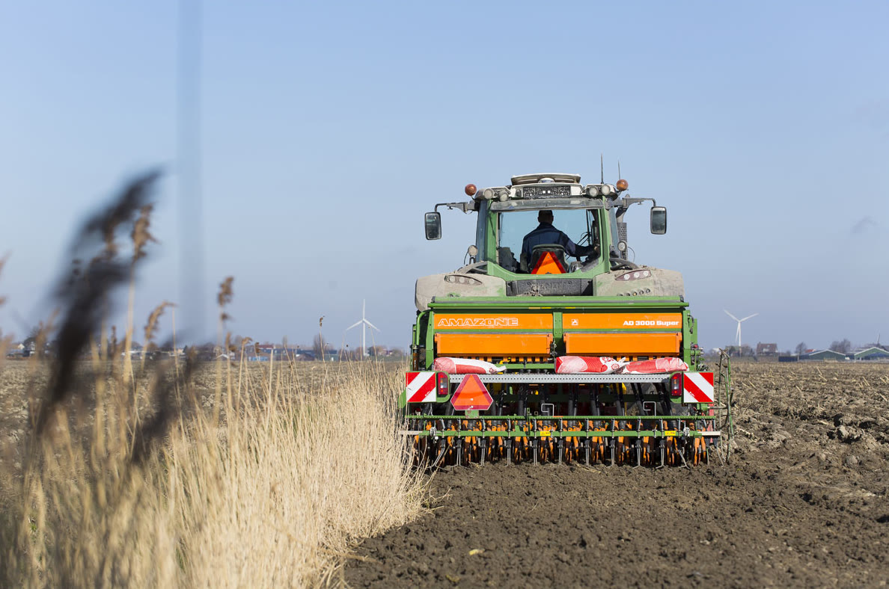
Een waardevolle schakel in onze vruchtwisseling, goed voor de bodemstructuur.
Indicatief. De exacte momenten hangen af van weer, ras en perceel.
Een goede oogst verdient een goede bewaring. Op ons erf staan moderne schuren met gekoelde bewaarruimtes, zodat onze producten ook maanden na de oogst hun kwaliteit behouden.
Met eigen machines voor poten, rooien en transport houden we de regie over elke stap. Dat geeft rust, voor ons en voor onze afnemers.
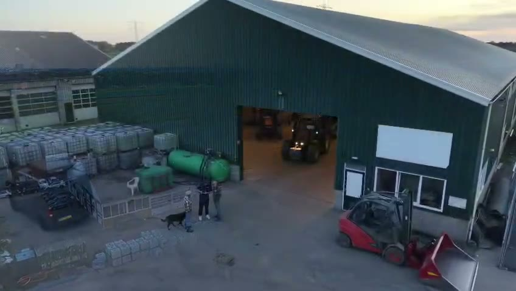
De grond is ons belangrijkste bezit. Daarom zorgen we er goed voor, zodat ook de volgende generatie er nog op kan boeren.
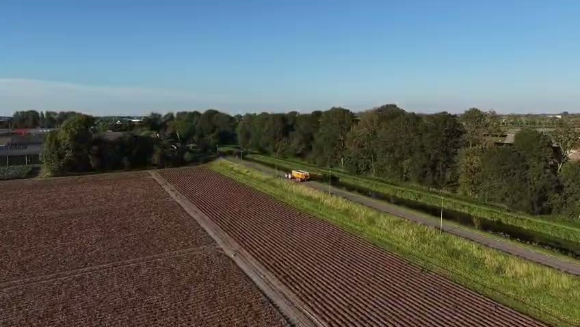
Een kijkje op onze akkers tijdens de aardappeloogst, van de eerste rij tot de bewaarschuur.
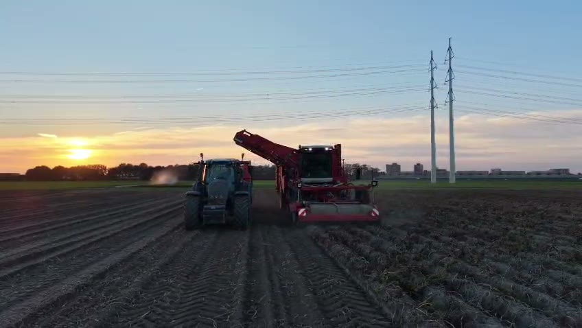
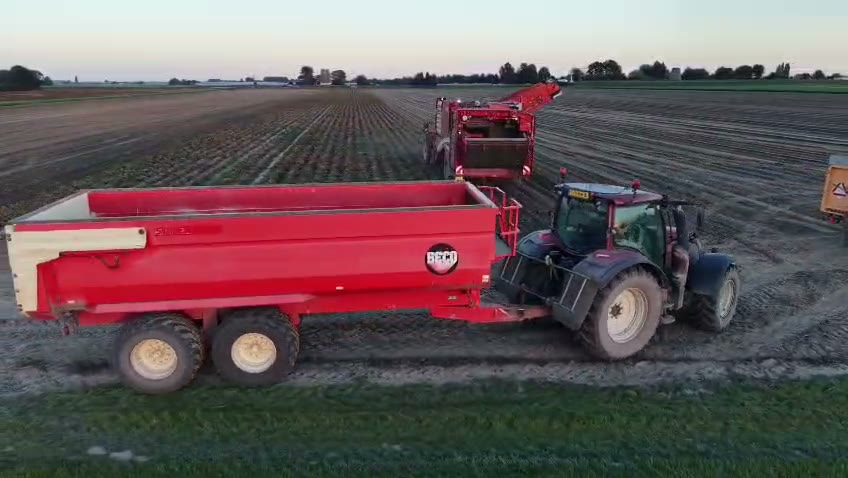
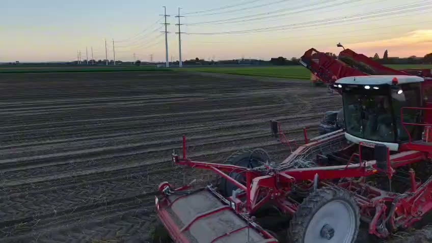
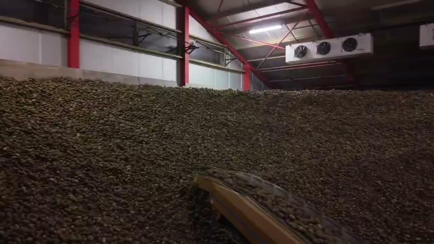
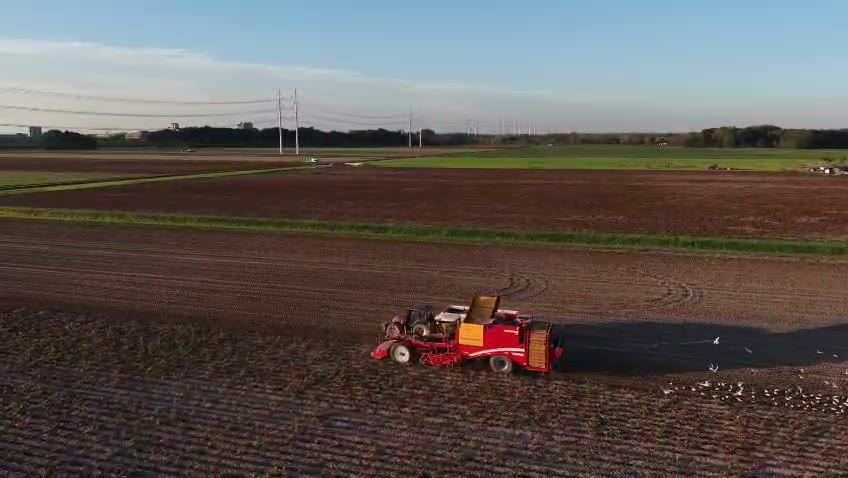
Spruiten worden in Nederland globaal van september tot en met maart geoogst. De jonge planten gaan in het voorjaar de grond in en groeien de hele zomer door.
Bij kou zet de plant een deel van zijn zetmeel om in suikers, als natuurlijke bescherming tegen bevriezing. Daardoor worden spruiten milder en zoeter van smaak.
Koel en donker, bijvoorbeeld in de groentela van de koelkast. Zo blijven ze enkele dagen vers en stevig.
Door spruiten, aardappelen, uien en zomertarwe af te wisselen blijft de bodem gezond en vruchtbaar, en krijgen ziekten en plagen minder kans. Goed voor de grond, goed voor de oogst.
Heb je een vraag over onze teelten, ben je afnemer of wil je samenwerken? Neem gerust contact met ons op. We denken graag met je mee.